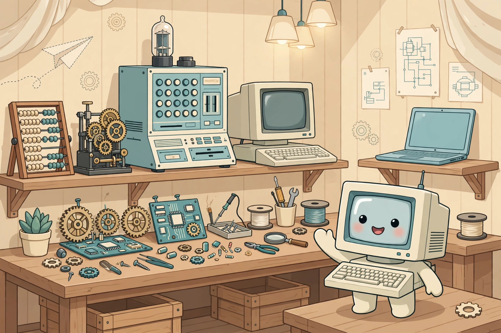

Welcome to the PC Workshop — shelves of machines from the abacus to the laptop, a workbench full of gears and circuit boards, and a friendly computer to show you around.
Meet Pip the Personal Computer, the mascot of this world.
The Signature PC System Depository holds 23,044 computer-system records: 109 public seed systems from the abacus (c. 2700–2300 BCE) to the modern laptop, 135 Signature originals, and 22,800 generated models from the deterministic GEN/2.0 lattice.
Two working tools, right here on the page. Each one says what it does and what it cannot do. Neither tool reaches the live web, and neither one needs a key.
Enter a JAH-PC system ID to check which range it sits in: on-demand model, drip record, curated seed, Signature version, or Signature field guide.
System ID:
Enter a category to count how many of the 500-record archive sample sit in it.
Category:
Designs, printables, and demos — free, downloadable, usable on the page. Every product is labeled Signature or Fun. Nothing here is for sale.
A build-it-yourself abacus: wooden rods, sliding beads, and a frame, in the manner of the depository’s first system, the Abacus (c. 2700–2300 BCE).
Making: cut ten rods from dowel, thread ten beads on each rod, and fix the rods in a wooden frame. The bead counts and the place-value layout follow the Abacus record.
A paper ornament: a friendly mainframe with blinking lights and a reel of tape, to stand on a desk.
Making: print the printable file on card, cut out the mainframe and the tape reel, fold along the marked lines, and glue the tabs. The blinking lights are drawn, not wired.
A set of cards for the 109 public seed systems, one card per system with its name, its era, and one plain sentence.
Making: print the printable file on card and cut out the cards. The names, eras, and sentences come from the archive index and the site’s own data file.
Download all product lines as a printable (text)
Pip once tried to run every model in the lattice at once, just to see what would happen. The abacus counted to ten and stopped, the mainframe hummed twice, and the laptop asked for a nap. (Fun — a made-up tale, not a record.)